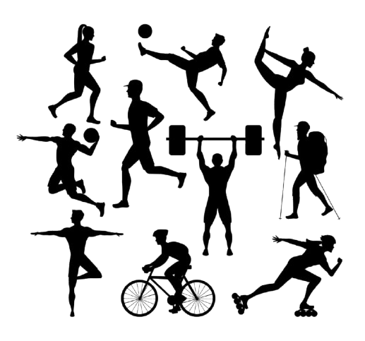
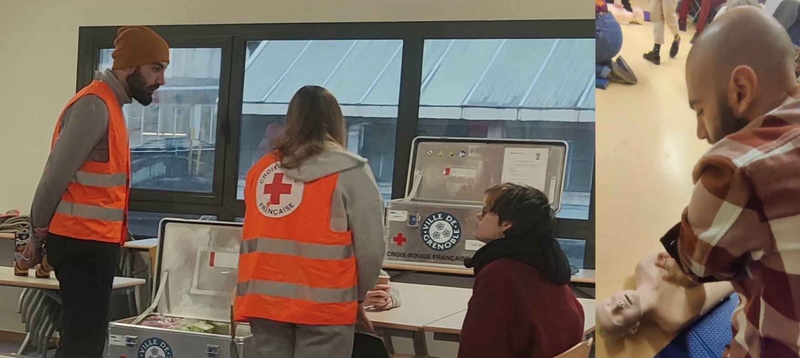

I'm a software developer who loves diving into tech and tackling challenges. I’ve always been intrigued by how things work. I’m passionate about creating things that make life easier and more exciting.
I'm French-Lebanese and well-versed in English, French and Arabic
Coding isn’t just about writing lines of code for me—it’s solving a puzzle. I love cracking difficult problems, whether it’s a tricky algorithm or a challenging riddle.
It’s not just something I do at work, though. I apply that same problem-solving mindset to everything I do including navigating life’s little hurdles.
When I’m not in front of a screen, you’ll probably find me doing something active. I’m all about staying fit, whether it’s lifting weights, cycling, or hiking with friends.
I think keeping both your mind and body in shape is important, and it’s a way for me to unwind and get a fresh perspective.


I also love volunteering when I get the chance—it’s a way to give back and stay grounded. You can always find me going the extra mile .. ``pretty sure that dummy started breathing just to make me stop CPR''
And yes, I’m a big fan of boardgames, puzzles and brain teasers. They keep me sharp!